Bridging the reality gap without dynamics randomization via systematic actuator modeling
1 배경 및 문제 정의
사족 보행 로봇이 실제 환경에서 실용적으로 쓰이기 위해서는 강건한 보행(Robust Locomotion)과 에너지 효율성(Energy Efficiency)을 동시에 달성해야 합니다. 하지만 시뮬레이션에서 학습된 제어기(Controller)를 실제 로봇에 이식할 때 발생하는 Sim-to-Real Gap은 여전히 큰 난제입니다.
기존 연구들은 이 문제를 해결하기 위해 주로 다음과 같은 접근 방식을 취했습니다.
1.0.1 기존 접근 방식의 한계
과도한 도메인 랜덤화 (Extensive Domain Randomization):
- 물리 파라미터를 넓은 범위에서 무작위로 흔들어 학습합니다.
- 문제점: 로봇의 실제 다이내믹스를 정확히 반영하기보다, 불확실성을 덮어버리는 방식입니다. 이로 인해 보행 성능이 저하되거나, 실제 로봇의 물리적 특성을 무시한 움직임이 나올 수 있습니다.
복잡한 보상 함수 튜닝 (Heuristic Reward Shaping):
- Sim-to-Real 격차가 커질수록, 연구자들은 실제 시스템에서의 관찰 결과를 토대로 보상 함수(Reward Function)를 반복적으로 수정(ad-hoc)하게 됩니다.
- 문제점: 이는 명확한 구조 없이 반복되는 과정이며, 보상 함수가 물리적인 효율성 개념과 동떨어지게 만듭니다. 결과적으로 최신 RL 제어기들은 10개 이상의 복잡하고 고차원적인 보상 항들에 의존하게 됩니다.
구동기 모델링의 부재 (Actuator Modeling Errors):
- 대부분의 연구는 구동기(Actuator)의 전기적/기계적 손실을 제대로 모델링하지 않습니다. 단순히 토크의 제곱(\(\tau^2\))을 최소화하는 식의 접근은 실제 에너지 소모와 거리가 멉니다.
PACE의 접근: “랜덤화로 덮는 대신, 구동기(Actuator) 레벨부터 시스템 전체까지 정밀하게 모델링하여 Reality Gap 자체를 없애자.”
1.0.2 PACE 개요
이 논문은 Sim-to-Real RL 파이프라인과 체계적인 구동기 모델링을 결합한 프레임워크인 PACE를 제안합니다. 핵심은 바텀업(Bottom-up) 방식의 분석입니다.
- Single Actuator: 단일 구동기 모델 특성 분석
- Full System: 전체 로봇 시스템 레벨에서의 동적 파라미터 추정
- Locomotion: 다기종 플랫폼에서의 보행 제어 검증
특히, 현대 사족 보행 로봇의 주류인 PMSM (Permanent Magnet Synchronous Motors) 모터를 위한 물리 기반 에너지 모델을 통합하여, 전이 가능성(Transferability)뿐만 아니라 에너지 효율성까지 잡았습니다.
1.0.3 주요 기여 (Contributions)
이 논문의 핵심 기여는 크게 네 가지로 요약할 수 있습니다.
- Sim-to-Real Pipeline (No Randomization)
- 구동기 및 시스템 모델을 RL 학습에 통합하는 오픈 소스 모델링 파이프라인을 제안합니다.
- 중요한 점은 동역학 랜덤화(Dynamics Randomization) 없이 시뮬레이션 모델을 현실과 일치시킨다는 것입니다. 오직 4n+1개의 최소 파라미터(관성, 댐핑, 마찰, 오프셋, 지연시간)만으로 Reality Gap을 좁혔습니다.
- Bottom-up Performance Analysis
- 단일 구동기부터 전체 로봇의 보행까지 다단계(Multi-level) 평가를 수행했습니다.
- 단순한 블랙박스 모델이 아니라, 물리적으로 설명 가능한 파라미터를 식별함으로써 모델의 신뢰성을 높였습니다.
- Cross-platform Validation
- 특정 로봇에만 국한되지 않고, ANYmal, TYTAN, MINIMAL 등 서로 다른 구동 방식과 크기를 가진 3개의 메인 플랫폼에서 검증했습니다.
- 또한, AIBO, NAO, GR-1 등 10개 이상의 추가 로봇에도 배포하여 범용성을 입증했습니다.
- Energetic Assessment
- 기존의 \(\tau^2\) 페널티 대신, PMSM 모터의 전기적/기계적 손실을 고려한 Physics-grounded Energy Model을 도입했습니다.
- 이를 통해 ANYmal 로봇의 COT (Cost of Transport)를 32% 감소시키는 획기적인 에너지 효율 향상을 달성했습니다.
2 Method: PACE Framework
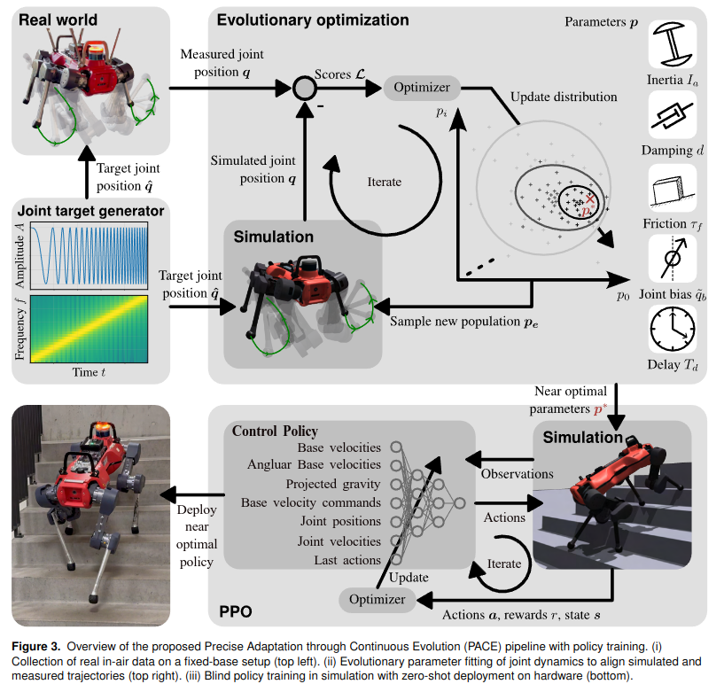
PACE 프레임워크는 “데이터 수집 \(\rightarrow\) 파라미터 식별 \(\rightarrow\) 강화학습”으로 이어지는 3단계 파이프라인으로 구성됩니다. 각 단계는 불확실성을 배제하고 물리적 정합성을 극대화하도록 설계되었습니다.
2.1 Data Collection: 현실의 데이터 확보
시뮬레이터를 현실과 맞추기 위해서는 먼저 현실 로봇의 정확한 거동 데이터가 필요합니다. 저자들은 복잡한 접촉 역학(Contact Dynamics)이 섞이는 것을 방지하기 위해 무접촉(In-air) 상태에서 데이터를 수집합니다.
2.1.1 실험 셋업 (Experimental Setup)
- 고정된 베이스 (Fixed Base): 로봇의 몸체를 공중에 단단히 고정합니다. 이는 베이스의 움직임으로 인한 관성력이나 코리올리 힘이 관절 간 상호작용(Cross-coupling)을 일으키는 것을 막기 위함입니다.
- 무접촉 (No Contacts): 다리가 지면에 닿지 않게 하여, 측정하기 힘든 지면 반력(GRF)이나 마찰의 영향을 원천 차단합니다. 특히 로봇이 서 있을 때(Stance)는 베이스의 거대한 관성이 구동기 관성을 덮어버리기 때문에(Dominate), 구동기 자체의 특성을 보려면 공중에 띄우는 것이 필수적입니다.
2.1.2 핵심 조건 (Key Conditions)
단순히 로봇을 흔드는 것이 아니라, 시스템 식별(System ID)에 최적화된 데이터를 얻기 위해 다음 조건들을 준수합니다.
- Chirp 신호 가진 (Excitation):
- 주파수가 점진적으로 변하는 Chirp 신호를 사용하여, 저주파 대역부터 고주파 대역까지 빠짐없이 시스템을 자극합니다. 즉 로봇의 관절을 천천히 크게 움직이는것 부터, 빠르게 떨듯이 움직이는것까지 모든 궤적을 만들어 command를 생성합니다. 논문에서는 20~60초동안 이 범위(0.1Hz ~10Hz)를 스윕하며 데이터를 모읍니다.
- 대역폭(Bandwidth): 이상적으로는 제어 정책(Policy)이 낼 수 있는 최대 주파수인 나이퀴스트 주파수(\(f_{policy}/2\))까지, 혹은 실제 보행 시 발생할 주파수의 최소 2배까지 가진합니다.
- 낮은 PD 게인 (Low Joint-level PD Gains):
- 평소처럼 높은 PD 게인을 쓰면 제어 루프가 너무 단단해져서(Stiff), 관성(\(I_a\))이나 댐핑(\(d\)) 같은 물리적 특성이 겉으로 드러나지 않습니다.
- 일부러 게인을 낮춰서(Soft) 시스템의 고유 거동이 잘 나타나도록 유도합니다. 이를 통해 관절의 무게감이나 마찰 특성을 데이터 상에서 명확히 분리해낼 수 있습니다.
2.2 Parameter Identification: 시뮬레이터 튜닝
수집된 데이터를 바탕으로 시뮬레이터가 현실과 똑같이 움직이도록 파라미터를 최적화(Fitting)하는 과정입니다.
2.2.1 식별 대상 파라미터 (\(p\))
복잡한 물리 엔진 전체를 건드리는 대신, 관절 동역학을 지배하는 최소한의 파라미터 5개만을 식별합니다. (\(n\)은 관절 개수)
\[ p = [I_a, d, \tau_f, \tilde{q}_b, T_d] \in \mathbb{R}^{4n+1} \]
- \(I_a\) (Armature Inertia): 구동기(로터+기어박스)의 유효 관성
- \(d\) (Viscous Damping): 속도에 비례하는 점성 마찰
- \(\tau_f\) (Coulomb Friction): 일정한 크기의 쿨롱 마찰
- \(\tilde{q}_b\) (Joint Bias): 관절 센서의 영점 오차 (Offset)
- \(T_d\) (Global Delay): 통신 및 제어 지연 시간 (시스템 전체 공통)
2.2.2 최적화 과정 (Evolutionary Optimization)
- 알고리즘: 미분이 불가능한 시뮬레이션 환경에서도 강건하게 해를 찾을 수 있는 CMA-ES (Covariance Matrix Adaptation Evolution Strategy)를 사용합니다.
- 병렬 시뮬레이션: \(N=4096\)개의 환경을 동시에 띄우고, 실제 로봇에 인가했던 타겟 명령(\(\hat{q}\))을 그대로 입력합니다.
- 손실 함수 (Loss): 실제 로봇의 관절 궤적(\(q^{real}\))과 시뮬레이션 궤적(\(q^{sim}\)) 간의 MSE(평균 제곱 오차)를 최소화합니다.
2.2.3 식별 불가능성 (Identifiability)과 PD 게인 고정
저자들은 시스템 식별 시 PD 게인(\(P_{\tau}, D_{\tau}\))은 최적화하지 않고 고정합니다.
\[ u \cdot I_a \ddot{q} \approx u \cdot P_{\tau} \Delta q \]
위 식에서 볼 수 있듯이, 관성(\(I_a\))과 PD 게인(\(P_{\tau}\))을 동시에 추정하려 하면, 두 값의 ‘비율’만 맞으면 되는 무수히 많은 해(Non-unique solutions)가 존재하게 됩니다. 따라서 우리가 확실히 알고 있는 값인 PD 게인은 하드웨어 세팅값으로 고정하고, 모르는 값인 물리 파라미터만 찾아내어 유일한 해를 보장합니다.
2.3 Learning Environment: 강화학습 설정
정확해진 시뮬레이터 덕분에, PACE는 동역학 랜덤화(Dynamics Randomization)를 전혀 사용하지 않고 강화학습을 수행합니다.
2.3.1 관측 및 행동 (Observation & Action)
- 비대칭 Actor-Critic:
- Actor (Policy): 로봇 내부 센서 정보(Proprioception)만 받는 ‘Blind Policy’입니다. 노이즈가 포함된 관절 정보 등을 사용합니다.
- Critic: 지형 높이 맵(Height scan), 마찰 계수 등 시뮬레이터의 ‘Privileged Info’를 모두 봅니다.
- Safe PD Control: 관절 한계(Joint Limit) 근처에서는 더 나아가는 명령을 무시하고(0으로 포화), 돌아오는 명령만 허용하는 안전장치를 시뮬레이션과 실제 로봇 모두에 적용하여 하드웨어를 보호합니다.
2.3.2 보상 함수 (Rewards)와 에너지 모델
복잡한 튜닝 없이 단 4개의 항(속도 추종, 충돌, 발 착지, 에너지)만 사용합니다. 특히 에너지(Energy) 항은 단순한 \(\tau^2\) 최소화가 아닌, PMSM 모터의 물리를 반영한 정교한 모델을 사용합니다.
\[ P_{total} = P_{el} + P_{mech} + P_{pot} \]
- \(P_{el}\) (전기적 손실): 모터 코일 저항(\(R\))과 전류(\(i_q\))에 의한 줄 발열(Joule Heating). 토크 기반으로 변환하여 계산합니다. \[P_{el} \propto \sum \tau^2 \frac{R}{r^2 k_i^2}\]
- \(P_{mech}\) (기계적 일률): 모터가 실제로 수행한 일. 회생 제동(Regeneration) 효율(\(k_{regen}\))까지 고려하여, 배터리로 회수되는 에너지는 차감합니다.
- \(P_{pot}\) (위치 에너지): 로봇 링크들의 위치 에너지 변화율. 이를 통해 로봇이 에너지를 아끼려 주저앉는 것을 방지합니다.
이러한 물리 기반 보상은 로봇이 기구학적으로 유리한 자세를 취하고, 저항이 큰 모터 사용을 줄이는 등 실질적인 에너지 효율을 학습하게 만듭니다.
3 Experiments & Results
3.1 정밀한 시스템 식별 및 모델 정확도 (In-air Identification)
가장 먼저 확인해야 할 것은 “과연 시뮬레이터가 현실과 똑같이 움직이는가?”입니다.
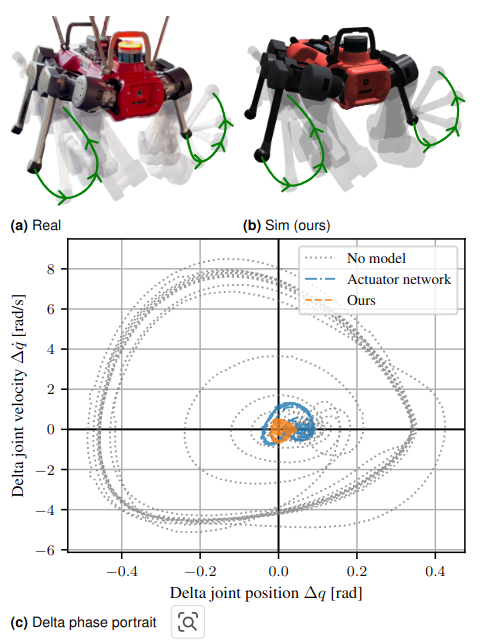
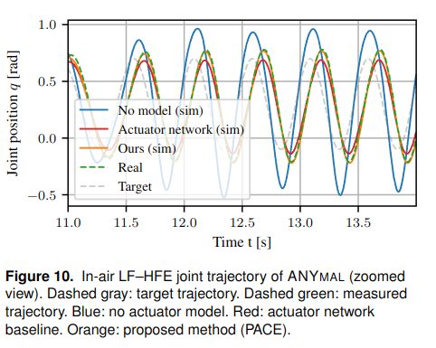
3.1.1 Figure 1 & Figure 10: 기준 모델 대비 압도적인 정확도
- 비교 대상: (1) 모델 없음(URDF Only), (2) 기존 SOTA (Actuator Network), (3) PACE (Ours).
- 결과 분석 (Figure 1c, 7d):
- Delta Phase Portrait: 시뮬레이션과 현실의 오차(\(\Delta q, \Delta \dot{q}\))를 점으로 찍었을 때, PACE(주황색)는 점들이 (0, 0) 원점 근처에 매우 조밀하게 모여 있습니다.
- 반면, Actuator Network(파란색)는 원점 주변으로 퍼져 있고 편향(Bias, 약 5도)이 관찰되며, 모델 없음(회색)은 아예 큰 궤적을 그리며 빗나갑니다.
- 효과: PACE는 블랙박스 신경망(Actuator Net)보다 더 적은 데이터(20초)를 쓰면서도, 물리적인 편향 없이 현실을 더 정밀하게 모사했습니다.
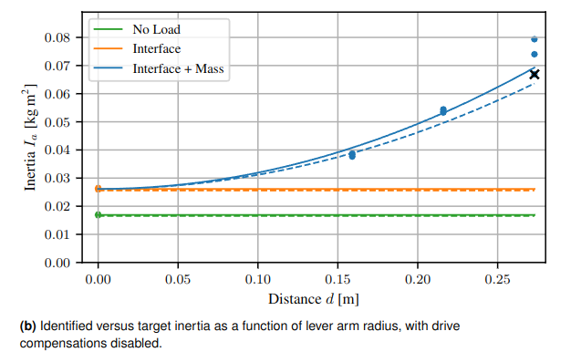
3.1.2 Figure 5b & 17: 물리적 정합성 입증
- 실험: 단일 구동기에 무게추(Mass)를 달아가며 관성(\(I_a\))을 식별했습니다.
- 결과 분석: 무게추를 늘릴수록 PACE가 식별한 관성값(\(I_a\))이 이론적인 물리 법칙(이차곡선)을 따라 정확하게 증가합니다.
- 효과: PACE가 단순히 데이터만 외우는 것이 아니라, 실제 물리량(관성, 마찰 등)을 정확히 찾아내고 있음을 증명합니다. 이는 학습된 모델이 새로운 동작(Unseen Trajectory)이나 다른 게인(Gain) 설정에서도 잘 작동하는 이유입니다.
3.2 Sim-to-Real 보행 성능 및 추종력 (Tracking Performance)
식별된 모델로 학습한 정책이 실제 땅 위에서 얼마나 잘 걷는지 확인한 결과입니다.
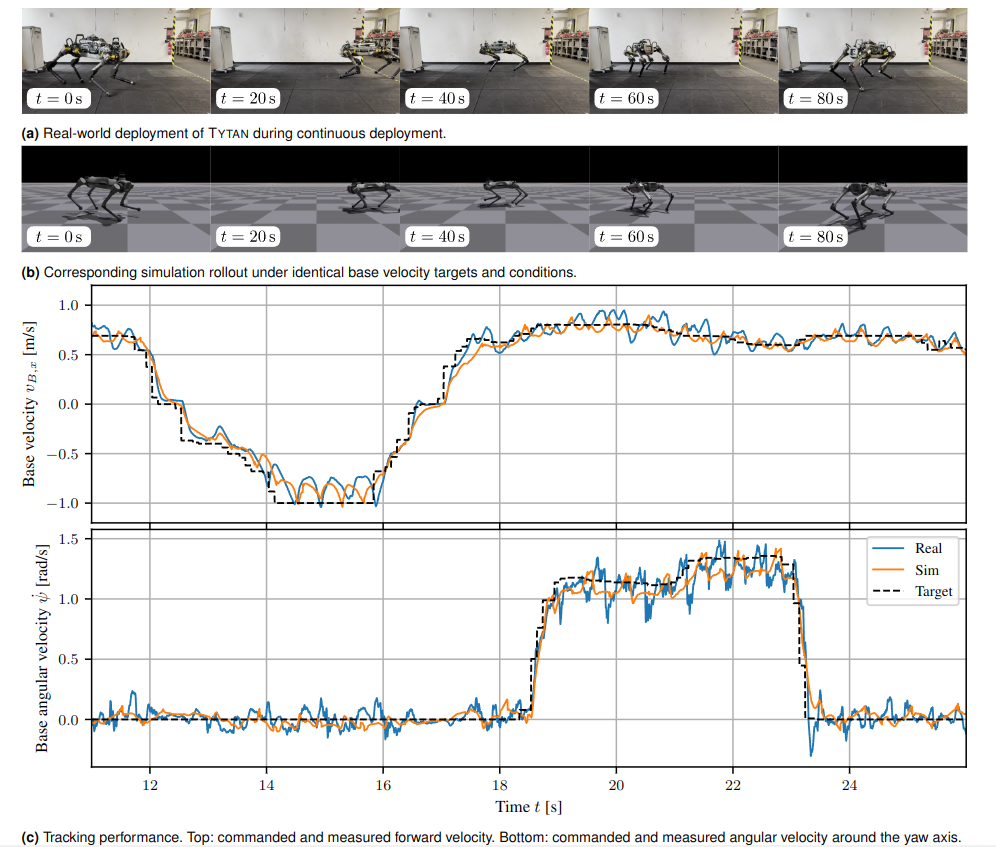
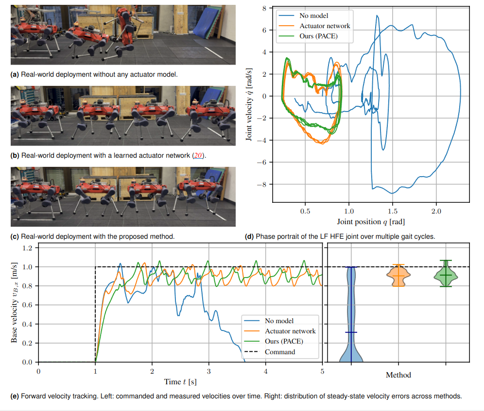
3.2.1 Figure 6 (TYTAN) & Figure 7 (ANYmal): 제로샷(Zero-shot) 배포 성공
- TYTAN (Figure 6):
- 사용자의 속도 명령(점선)에 대해 실제 로봇(파란선)과 시뮬레이션(주황선)이 거의 완벽하게 일치합니다.
- 특히 전진 속도(\(v_x\))뿐만 아니라 회전 속도(\(\dot{\psi}\)) 추종 능력도 매우 뛰어납니다.
- ANYmal (Figure 7):
- No Model: 크레인에 걸려 넘어지며 보행에 실패합니다. [cite: 753]
- PACE: 기존 SOTA인 Actuator Network와 대등하거나 더 우수한 보행 성능을 보여줍니다. 정상 상태(Steady-state)에서의 속도 오차 분포(Violin plot)가 매우 좁고 안정적입니다.
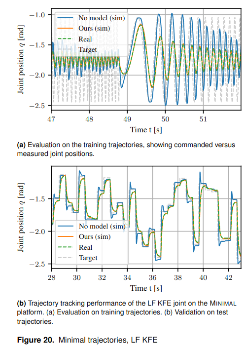
3.2.2 Figure 20 & 21: 다양한 로봇 및 동작 검증
- 소형 로봇 MINIMAL에서도 훈련 궤적과 테스트 궤적 모두에서 시뮬레이션과 현실이 일치했습니다.
- ANYmal의 횡이동(Sideways)과 제자리 회전(Yaw) 같은 복잡한 동작에서도 목표 속도를 정확히 추종했습니다.
3.3 획기적인 에너지 효율 향상 (Energetic Efficiency)
이 논문의 가장 강력한 성과 중 하나입니다. 물리 기반 에너지 보상을 사용한 효과가 데이터로 드러납니다.
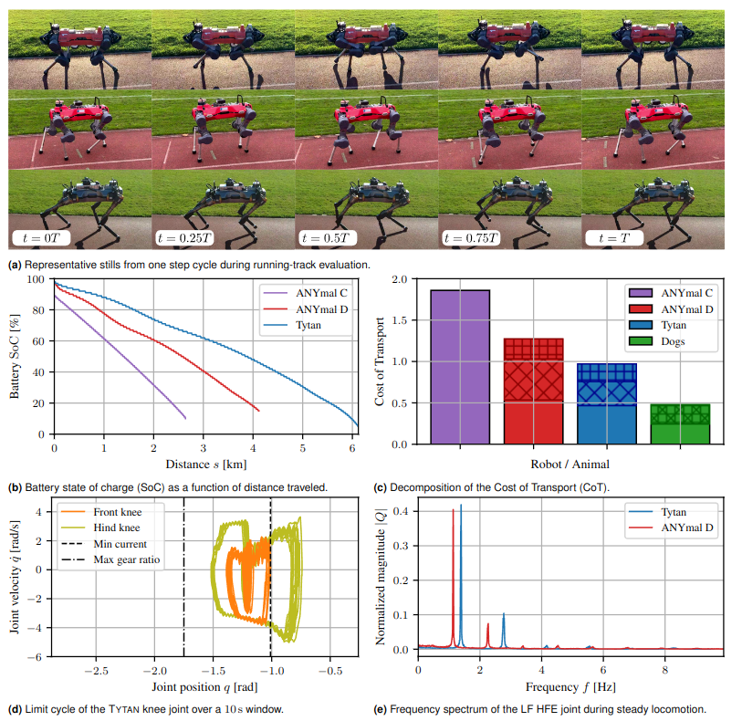
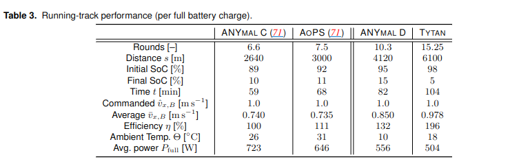
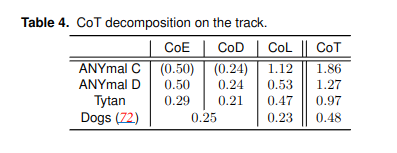
3.3.1 Figure 8 & Table 3, 4: COT (Cost of Transport) 감소
- 실험: 400m 육상 트랙을 배터리가 다 닳을 때까지 달리게 하여 에너지 효율을 측정했습니다.
- 결과 분석 (Table 4):
- ANYmal C (기존 SOTA): COT 1.86
- ANYmal D (PACE 적용): COT 1.27
- 효과: 이동 에너지 비용(COT)을 약 32% 감소시켰습니다.
- 원인 분석: 정확한 모델링 덕분에 로봇이 다리를 더 펴고(Straight-leg) 걷는 보행을 학습할 수 있었습니다. 무릎을 굽히고 걸으면 토크가 많이 들어 에너지를 낭비하는데, PACE는 다리를 펴도 시뮬레이션이 불안정해지지 않기 때문에 효율적인 자세를 찾을 수 있었던 것입니다.
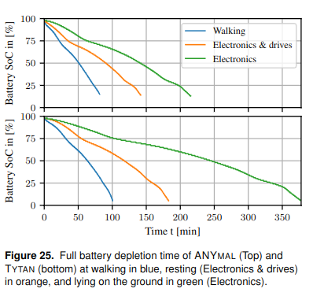
3.3.2 Figure 25: 배터리 지속 시간
- TYTAN: 한 번 충전으로 6.1km를 보행하며 104분간 작동했습니다.
- ANYmal D: 4.12km를 보행하며 82분간 작동했습니다. 이는 기존 제어기보다 월등히 긴 거리입니다.
3.4 동적 한계 돌파 (Dynamic Limits)
단순한 걷기를 넘어, 하드웨어의 한계까지 밀어붙이는 고난도 동작 수행 능력입니다.
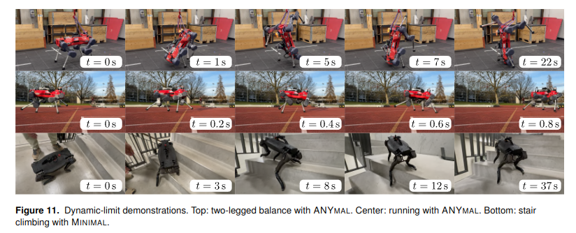
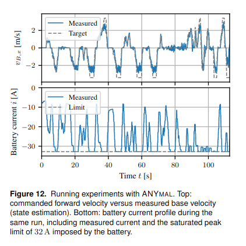
3.4.1 Figure 11 & 12: 하드웨어 리미트 도달
- 고속 주행 (Running): ANYmal 로봇으로 3m/s의 달리기 속도를 기록했습니다.
- Figure 12를 보면, 속도가 3m/s에 도달했을 때 배터리 전류가 한계치인 32A(빨간 점선)에 도달하여 포화(Saturation)되는 것을 볼 수 있습니다.
- 의미: 제어기의 성능 부족이 아니라, 배터리 출력의 한계 때문에 더 못 달린 것입니다. 즉, PACE 제어기는 하드웨어 성능을 끝까지 뽑아냈습니다.
- 이족 균형 (Two-legged Balance): 사족 보행 로봇으로 두 다리로만 서서 균형을 잡는 고난도 제어에 성공했습니다.
- 계단 오르기: 4kg짜리 소형 로봇(MINIMAL)으로 일반적인 크기의 계단을 연속으로 오르는 데 성공했습니다.